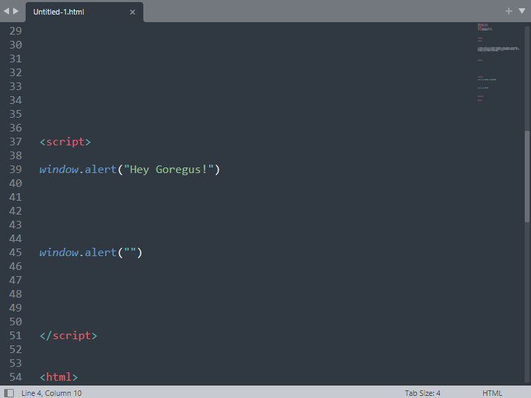
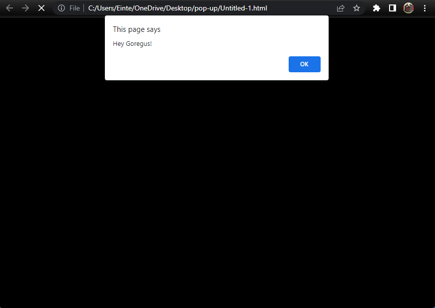
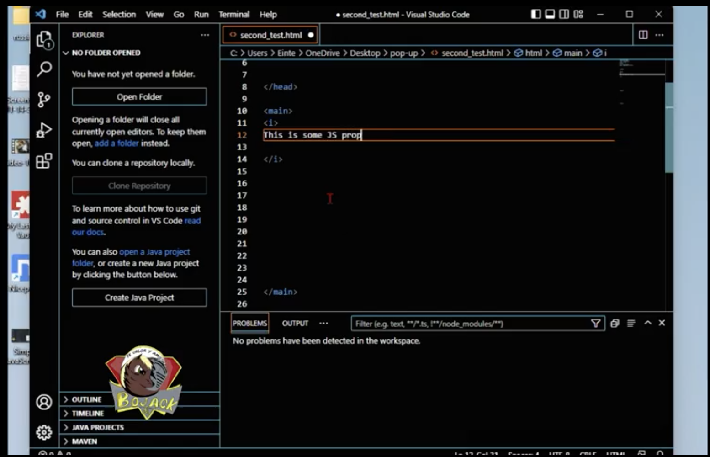
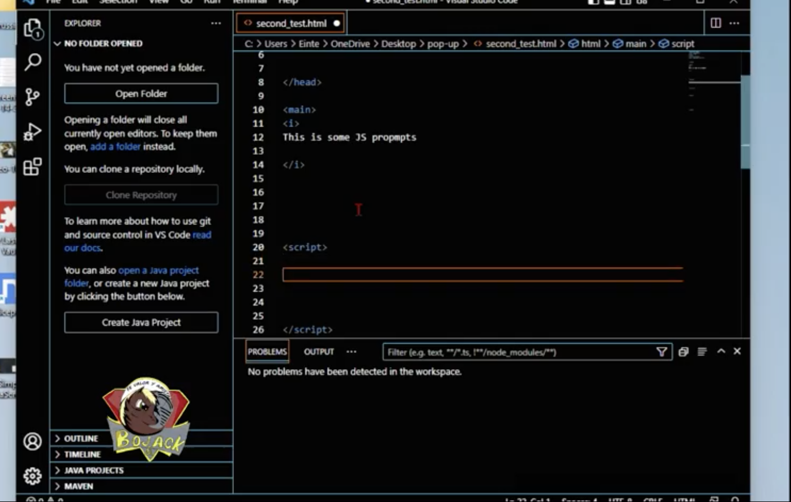
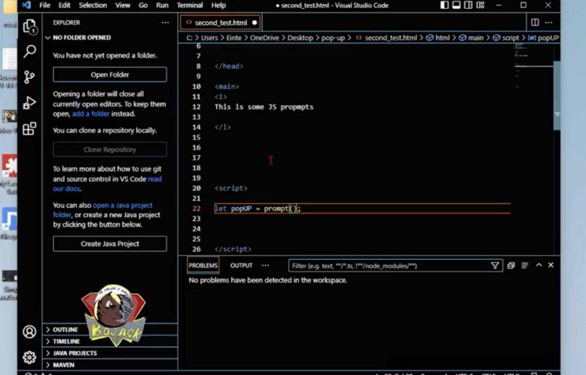
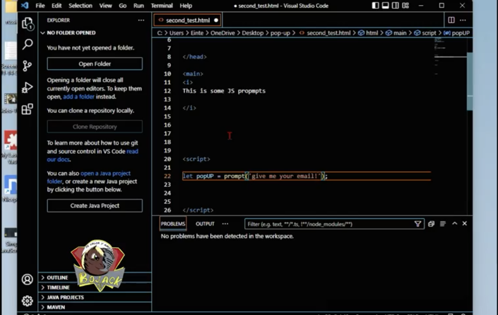
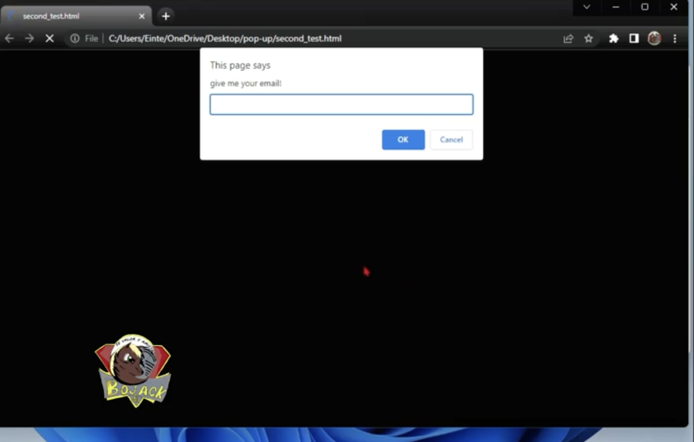
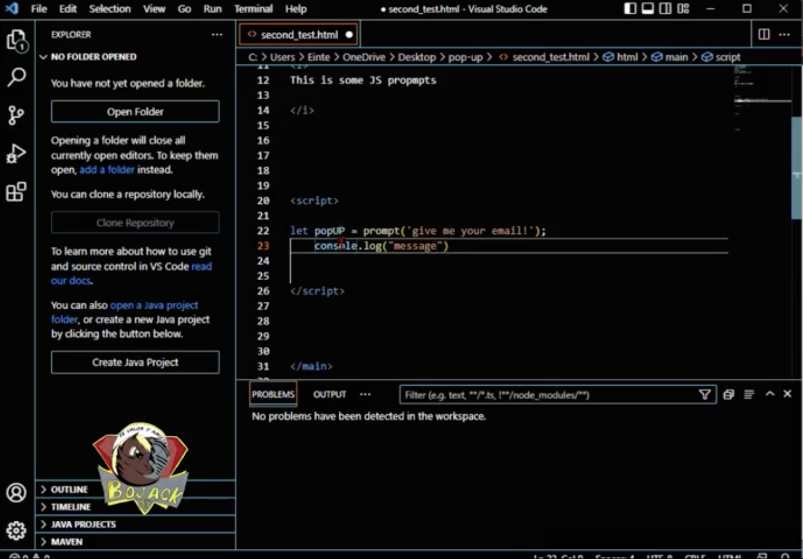
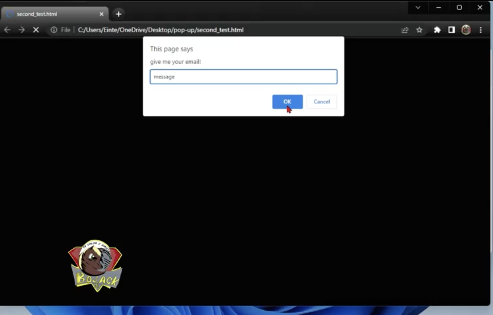
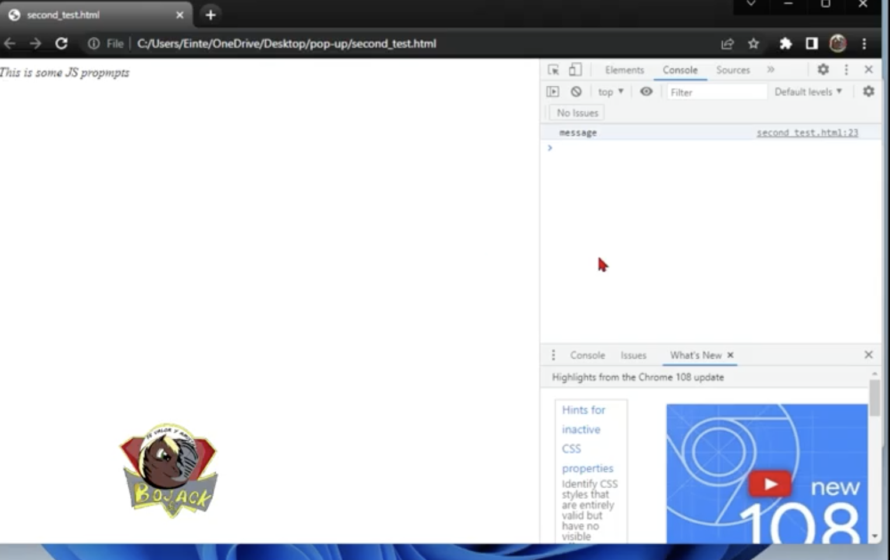

At last we have arrived at J.S. Note that even tought the language has a similar name to another popular one named Java, the two have almost noting in common, JavaScript was smiply created afther Java and its develpoer NetScape wanted to cash-in on Java's popularity back in 1995. And so, JS is a scriptting leanguage that is one of the three core technologies that form the foundation of the internet.As a matter of fact, this wepage that your viewing right now is made up of JS. Because whenever you press the sidemenu button the JavaScript activates and opens it for you. Whereas HTML and CSS give a webpage structure and Style, JavaScript adds the brains and dynamic behavior of the website.
Moreover, lets begin our small JS program by making a tiny notification box appear on top of our viewport, lets make it and send a message to whoever opens the document.
- Step one: make a standard HTML doc. Within a folder(name it)
- Step two:Go all the way to the bottom of the file, right at the closing body tag.
- Step three: Add two Script tags and delete the text/JavaScrpt attribute, It is not needed anymore.
- Step four: inbetween the two Script tags begin writting your first line of code!
- Step five: Lets make majic! just write, window.alert('This is my first JS application') Save it and open the HTML document now.
- Note: to be honest you dont really need the Window(object) in the snippet. This word just makes sure that the command will run in whatever machine you use it on.
Part one

Part two
Part three
If you have come this far, it must mean you are serious about your future; Allow me to salute you, I know you will do great things. I this tutorial we will be making the second procedure, for building JS notification boxes; its not that challenging so you shuld be able to execute the code withaut any problems. It is known as the prompt-box and just like the message box it pops up on the screen afther a certain action is taken. Aftherwards the user can input data within it.
- Part One: lets add some text within the canvas so that it wont be so empty, slap a P-tag in there and write This is some JS prompt boxes in my example I used a main-tag instead of the usual body-tag for displaying the moust important parts of the webpage.
- Part Two: add the script-tags, if where gonna make use of JavaScript, we can eather store it in a seperate file, or we can store it locally within the HTML doc. For this tutorial lets do the ladder. Make two script tags and open them to bagin adding functionality to our webpage.
- Part Three: this time around we will be employing real-JS because now we wont just be sending out an alert, but we will get real input, from our user via a variable. Initialize the variable and then add quotation marks with your message at the end.
- Part Four: now that you have made your first or one of your first variables let me explain what this code means; first we have the Let keyword, this was added during the ES6 revision to JS in 2015. It allows you to declare a variable with block scope. Afther this we name our let variable with a clever name, then we add an equals sign followed by functionality with parentesis and we end it with a semi-colon. This scope varibale will activate the pop-up whenever the webpage is activated.
- Part Five: Now, make sure to save and then click on your HTML document and watch as this single variable activates the pop-up box.
- Part Six: Great, now that you have succesfully used your first varible, lets do someting else with it. Now where going to add more code so that we can store some data in the console. Just add the codeblock "console.log" and parenthesis with your message and aftherwards open the document again to enter it inside the box.
- Part seven: Now this time enter the word message into the prompt-box and hit OK.(to enter the String inside the console)
- Part eight: Now simply right-click on your mouse and choose INSPECT to open the dev-tools and navigate to the console options if your using Google Crome. And AHA! can you see your message within the correct table number?

Part one

Part Two

Part three

Part four

Part five

Part six

Part seven
